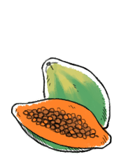

papaya
Papayas, or pawpaw, are the fruit (berries) of the carica papaya. It is one of 22 species of the genus Carica. There are two main kinds: Red papayas and yellow papayas. Even when unripe, these two varieties can be grated and eaten and are known as 'green papayas'. Papayas are a rich source of vitamin C.
The ripe fruit can be consumed raw, and the unripe green fruit can be eaten cooked in salads or other meals. The seeds are edible, they can be washed and dried and used like black pepper.